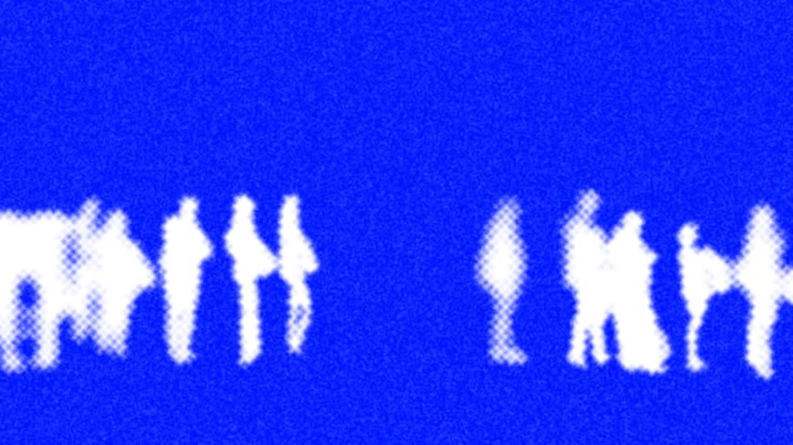
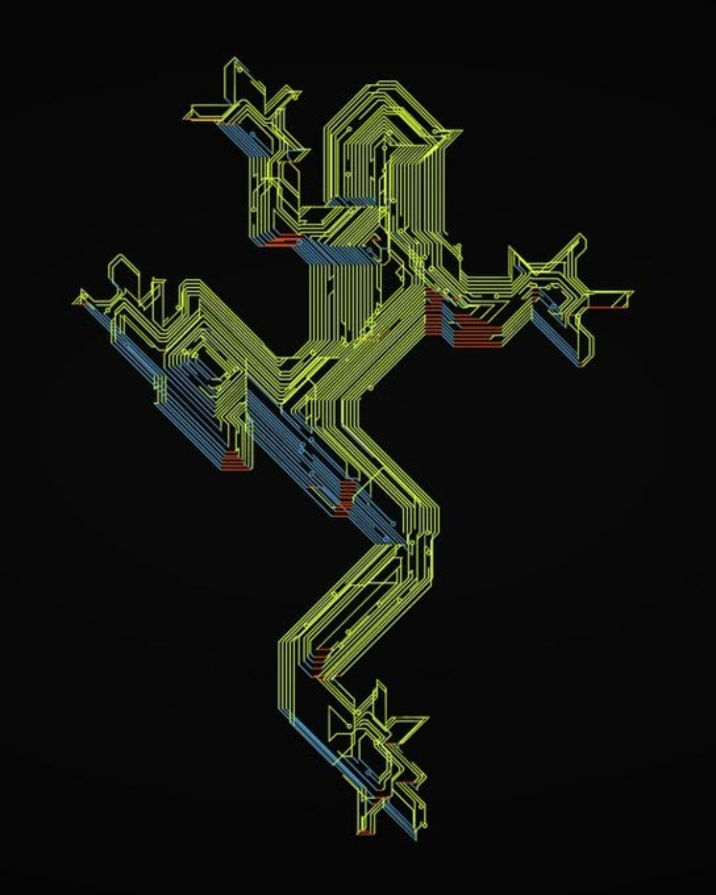
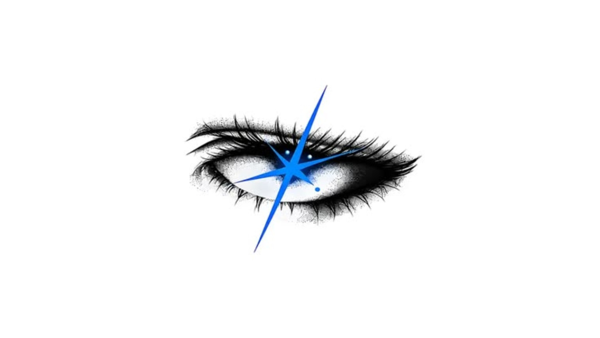
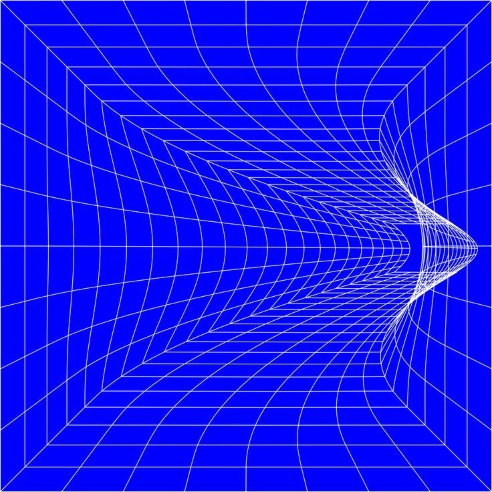

Gözlemle.
NASA GIBS servisinden gerçek tarihli MODIS uydu görüntülerini harita üzerinde görüntüle. Görüntü tarihini ve kaynağını şeffaf biçimde sun.
Okyanusları anlamak, korumanın ilk adımıdır. Güncel uydu görüntülerini, deniz akıntılarını ve meteorolojik tahminleri tek bir araştırma ekranında buluşturuyoruz.
Uzaydan görünen mavi yüzey, sürekli değişen bir sistem. ODAK, uydu gözlemleriyle deniz ve hava tahminlerini aynı araştırma deneyiminde birleştiriyor.

FIG. 01 / GLOBAL OBSERVATIONGerçek uydu görüntülerini incele, haritadan bir deniz noktası seç ve mevcut meteorolojik ve oşinografik model tahminlerini getir. Görsel anlatımdan çalışan araştırma paneline geç.

Akıntı ve rüzgâr tahminlerini kullanarak seçtiğin noktadan yaklaşık sürüklenme yönünü hesapla. Bu bir doğrulanmış plastik tespit sistemi değil; gerçek kaynaklara bağlı karar destek prototipidir.
CANLI VERİ PANELİNE GEÇ ↗ODAK'ın görsel dünyası: gezegen, bulutlar, veri ağları ve teknoloji. Bu bölümde kullanılan görseller projenin orijinal görsel arşivinden alınmıştır.


Gerçek uydu katmanlarını keşfet. Haritada herhangi bir deniz noktasına dokun; o koordinat için en güncel mevcut deniz ve rüzgâr tahminlerini getir.
Nokta seçmek için haritaya tıkla; sürükleyerek gez, + / − ile yakınlaştır.
Oklar hareket yönünü gösterir; rüzgâr verisi geldiği yönden çevrilir. Noktalar seçili konum çevresindeki sınırlı model örnekleridir. Değer için okun üzerine gelin veya odaklanın.
Seçilen nokta çevresindeki son 30 günün uydu sahnelerini bul. Sahne bulutluluğu tüm görüntüye aittir; listelenmesi atık tespiti değildir.
Seçilen konum için katalog araması yapılmadı.
Seçili noktanın çevresindeki yaklaşık 1 km² alanda son 45 günden sahne bulutluluğu %30 veya daha düşük ilk uygun Sentinel-2 sahnesinin bantlarını işle. Renkler yalnızca göreceli FDI değerleridir; çöp tespiti veya güven düzeyi değildir.
Seçili nokta için analiz yapılmadı.
Aynı bölgenin iki uygun Sentinel-2 sahnesini incele. Görüntülerdeki değişim, çöp tespiti veya atığın yeni olduğunu göstermez.
Henüz karşılaştırma yapılmadı.
Analizden sonra spektral inceleme noktaları burada görünür.
Gözlem henüz kaydedilmedi.
Yerel kayıtlar yükleniyor…
Seçilen deniz koordinatındaki gerçek tahmin akıntısı ve rüzgârı kullanarak varsayımsal bir yüzen nesnenin kısa süreli sürüklenme yönünü hesapla.
Alan tahmini için çevredeki model hücreleri sorgulanır. Eski tarihli uydu görüntüsündeki bir noktanın bugünkü konumu bilinmez; bu işlem geçmişten bugüne takip yapmaz.
Bu basitleştirilmiş noktasal tahmin başlangıç konumundaki saatlik API vektörlerini kullanır. Saatlik veriler arasında vektörler 15 dakikalık adımlarla hesaplanır; yaklaşık kıyı maskesine ulaşınca rota durur. Yeni konumlarda akıntı yeniden örneklenmez; gerçek atık konumu veya toplama rotası olarak kullanılamaz.
NASA GIBS servisinden gerçek tarihli MODIS uydu görüntülerini harita üzerinde görüntüle. Görüntü tarihini ve kaynağını şeffaf biçimde sun.
Open-Meteo deniz ve hava tahminlerinden dalga, yüzey sıcaklığı, akıntı ve rüzgâr verilerini koordinata göre sorgula.
Akıntı ve rüzgâr girdileriyle varsayımsal sürüklenme analizi yap. Gerçek plastik algılama için ayrı bir uydu görüntüsü işleme ve doğrulama modeli gereklidir.
Denizlerdeki atık sorununu çözmek için önce veriyi erişilebilir, anlaşılır ve eyleme dönüştürülebilir hâle getirmeliyiz.
CANLI PLATFORMU İNCELE ↗